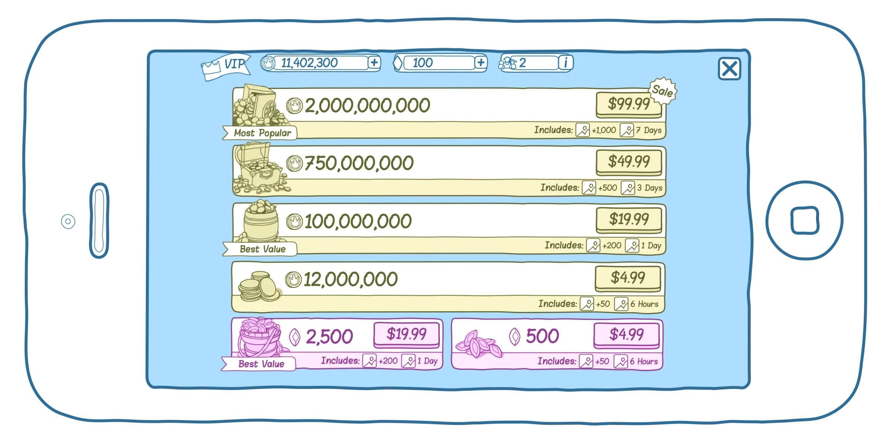
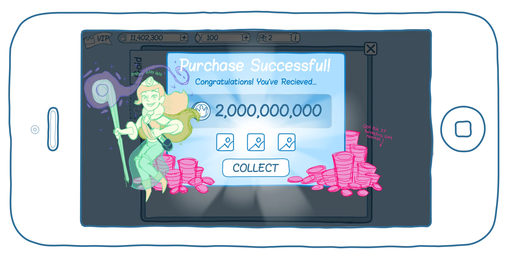
Store Revamp
ReelTown Slots
I was brought into the ReelTown Slots' team to help improve the usability of their app, and the first place I was asked to assist was their store. The goals of overhauling the store were to increase conversion rate, improve legibility, improve visual priority of UI elements, convey their boot and VIP systems more clearly, and provide a rewarding and clear experience to those who purchase.
Understanding the market. Who is the user. What are the goals of the project? Use case?
To comply with my non-disclosure agreement, I have omitted and obfuscated confidential information in this case study. All information in this case study is my own and does not necessarily reflect the views of Big Fish.
The previous store looked like this
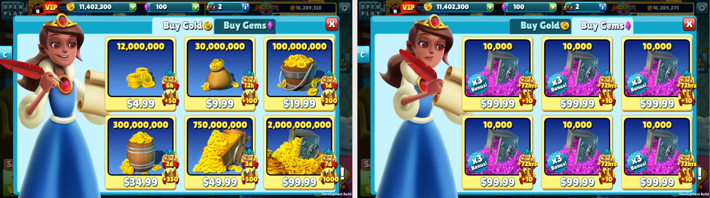
Competitor Analysis
My first step towards revamping this games' store was to dig into what users expectations and standards had been set to based on other competing games in this niche of the mobile game space. I collected screen recordings of myself making small purchases in all the apps that own market share in the niche that our app was shooting to monetize within. Then I added each video to a wiki page/spec for others to view, and formed a detailed list of comparisons to judge each store's successes and failures. The following is the list of what made a good store vs a bad one;
- Does the store have animation transitions?
- Do they display highest package first?
- Are the packages displayed in a scrolling list?
- Do they display a confirmation popup after making a purchase?
- Are there doobers (aka flying coins) that give the player feedback that they have been credited after a purchase?
- Does a user remain in store after purchase is complete?
The criteria bullet points above aren't always inherently good or bad, but served as a good record of what others in the space are doing before we committed to one decision or another.
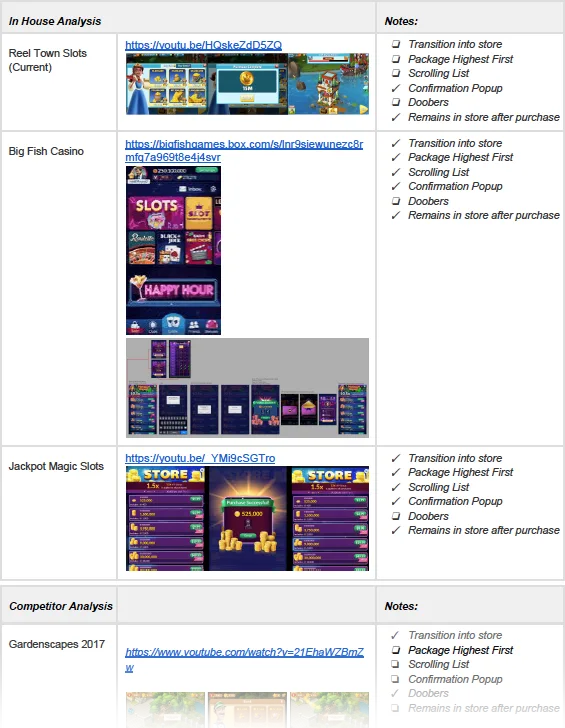
Iteration/ Exploration
Next I began iterating on the UI layouts. I was told to stay away from the visuals so i chose to work in a very simple wireframe style and focused solely on layout, visual priority, and usability. This early stage of a project is my favorite part and allows me to really flex my ability to come up with creative new ideas within the provided amount of time. Below are some of the many ideas I presented to the team. With each iteration I zoned in closer and closer towards what the deciders on the team would be happy with and what works best for the development team, all the while keeping the end users needs in mind. The work I did filtered out bad ideas in a democratic fashion and by starting with big problems and filtering down to the small pixel pushy type problems we eventually arrived at a design for the store that the team was all happy with.
It's not uncommon for a CEO or other steak-holder in a project to come in late and start asking why certain decisions were made. This sort of loop back or diversion in process can cause allot of wasted work and frustration so I keep a very close record of all major decisions made during this iterative process by saving a new version of my working file that can be jumped back to when ever we need to be reminded of previous decisions or just back to old iterations of a project.
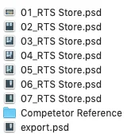
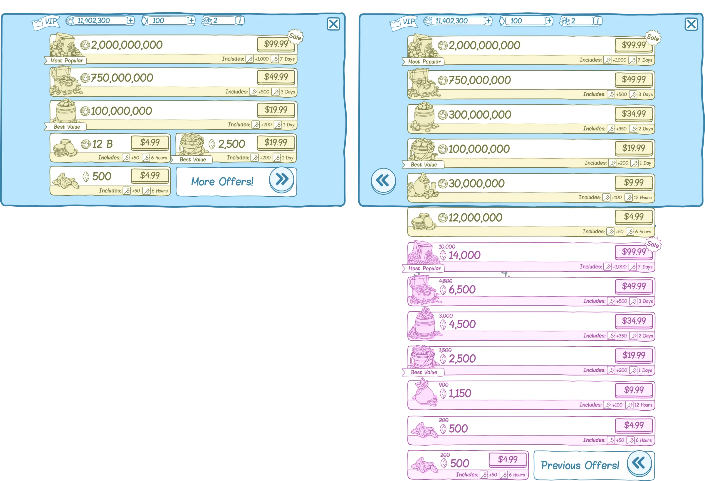
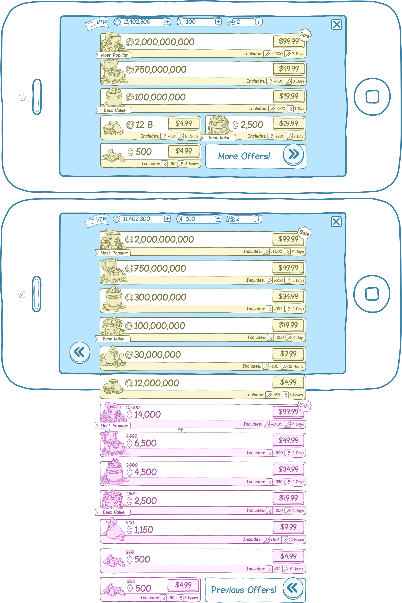
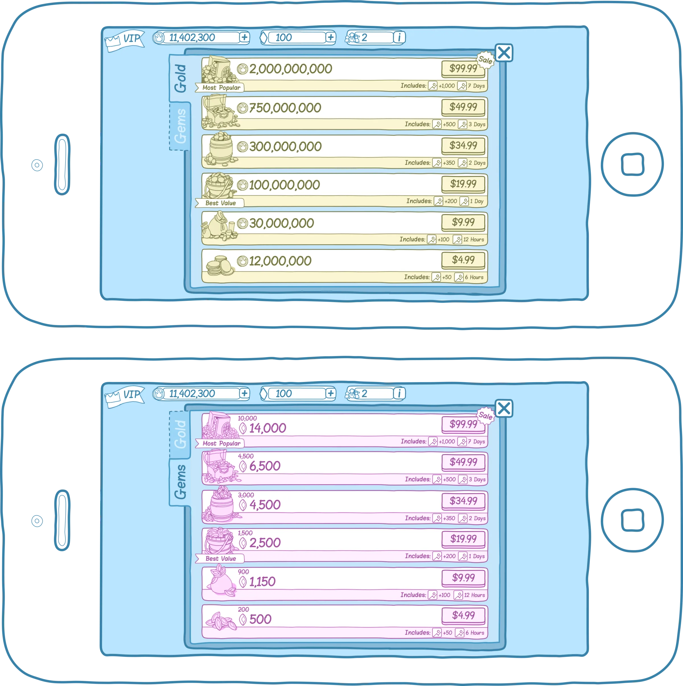
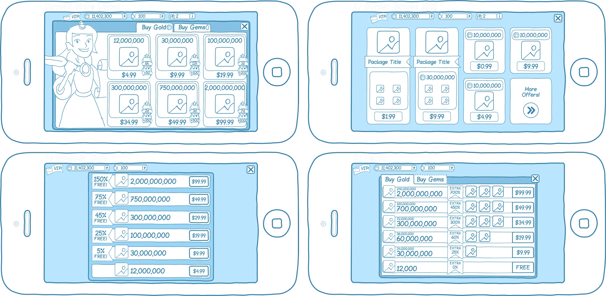
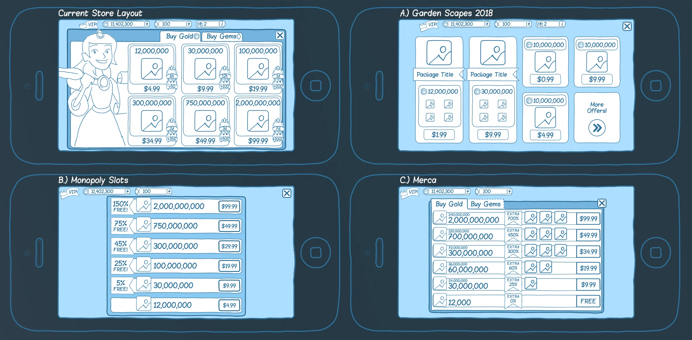
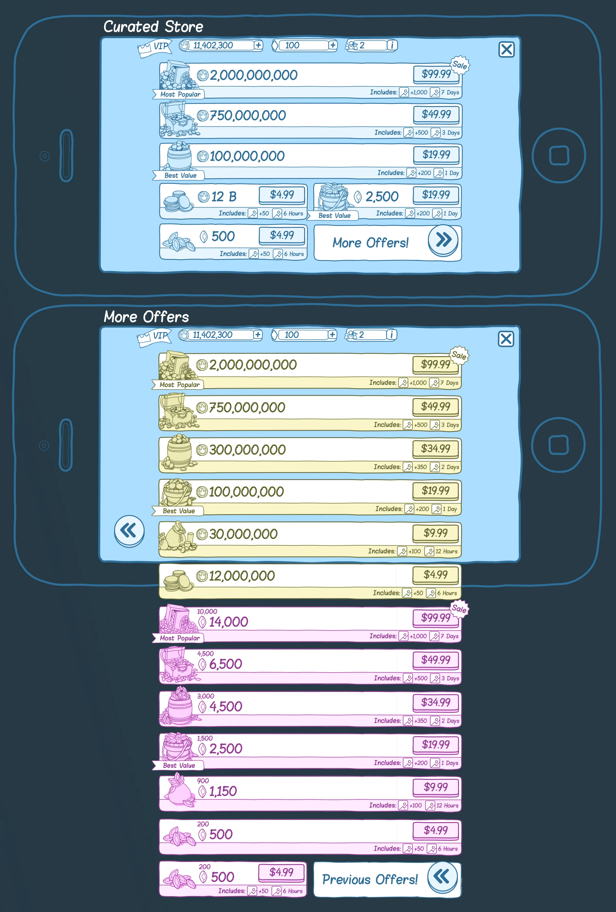
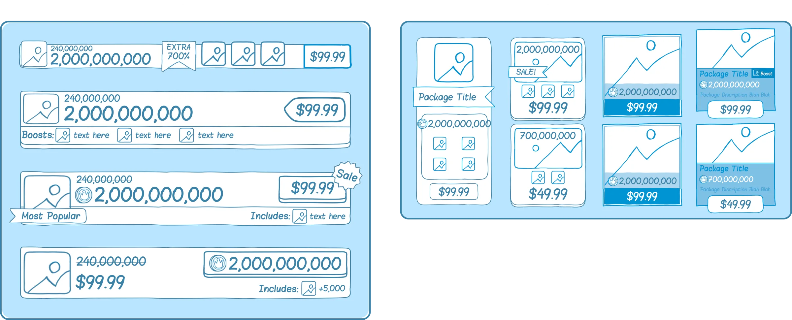
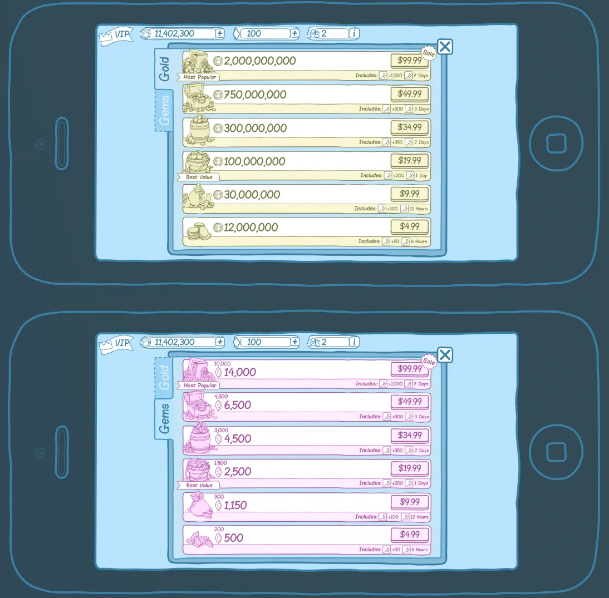
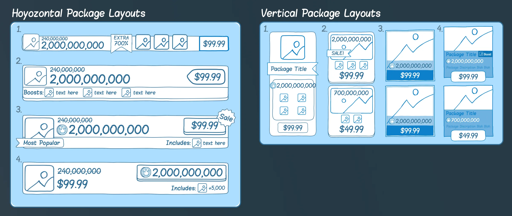
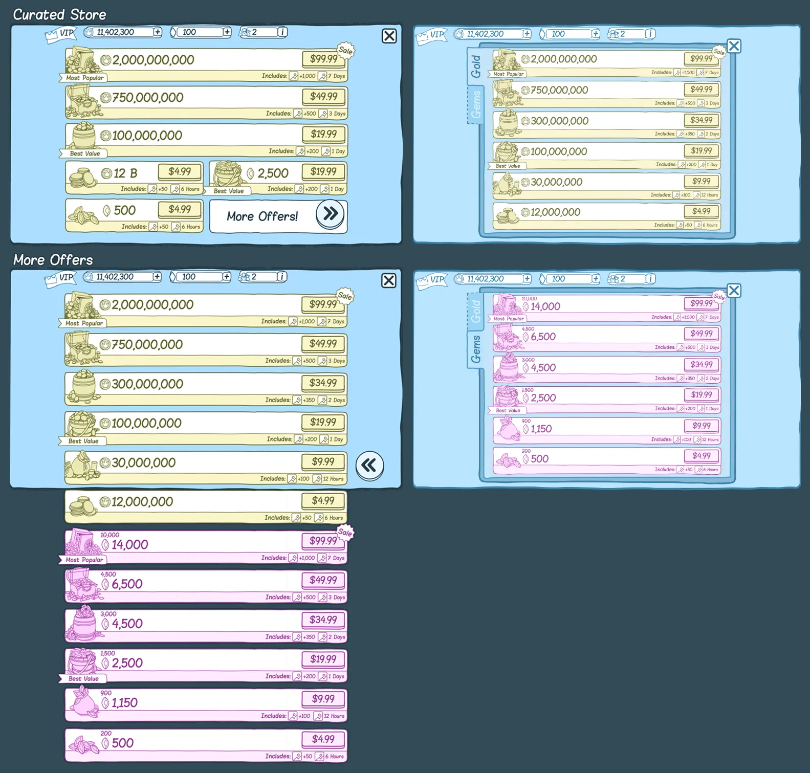

This iteration was meant to help hone in on whether we wanted to go with a chip package layout that was horizontal or vertical.
Final Layout
This was the layout we settled on in the final iterations.
UX/ Purchase Flow
The next and most important part of designing the store is to create a pleasing purchase flow. Thanks to my competitor research I knew the criteria for what would make my purchase flow successful and once I met that minimal requirement anything above and beyond just adds icing on the cake. The most important part of the purchase flow is the "delight moment", or the moment where a user receives visual feedback that they have received what they purchased. giving the user enough of an exciting experience they react with a dopamine release in the brain is the goal.
This still image serves as a placeholder for the illustration resource to come in and push off of. I also intended the characters staff to have a particle effect.
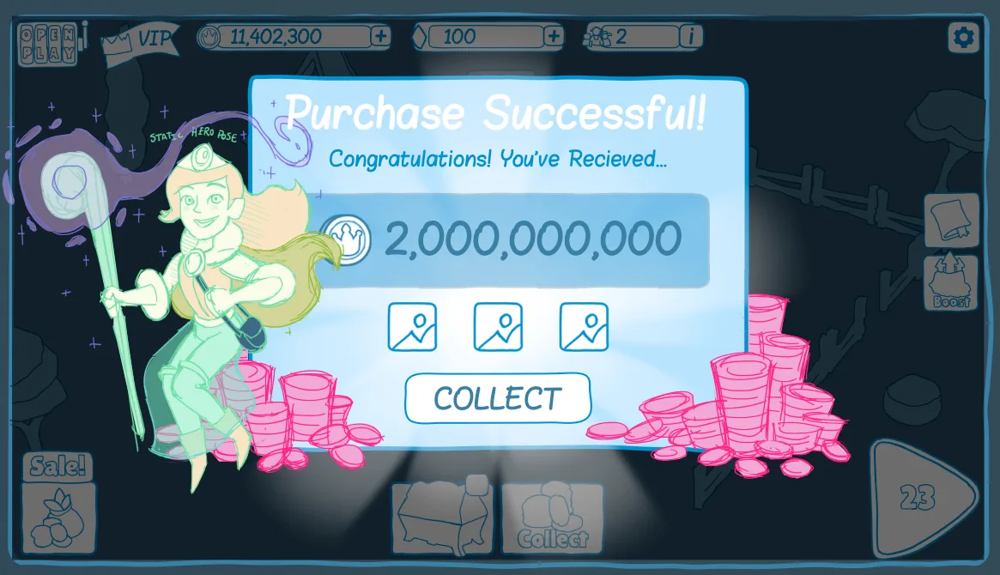
The particle effects, the animation choreography, the feedback of the doobers, and the in your face text all amounts to a good experience for our players who are spending their hard earned money on virtual currency.